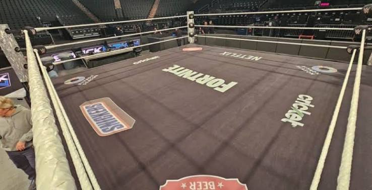
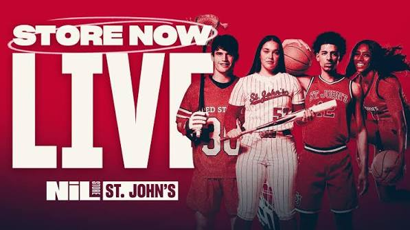
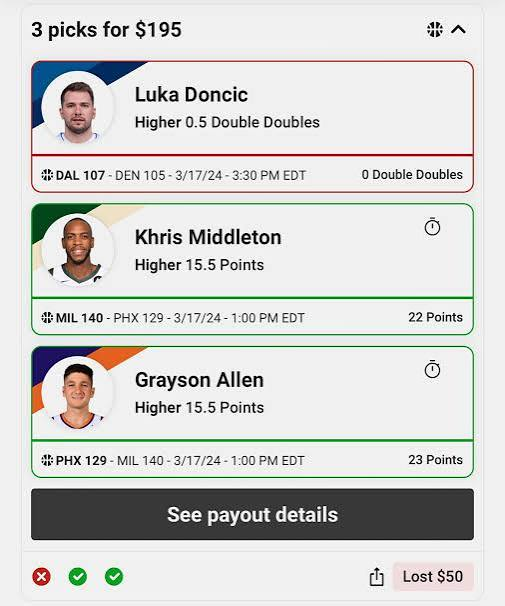
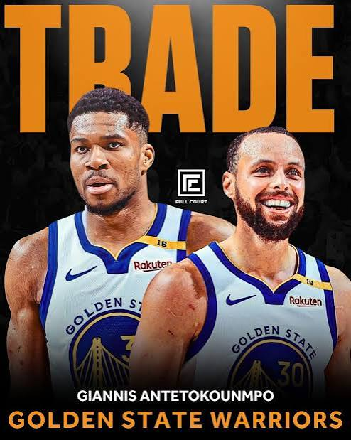
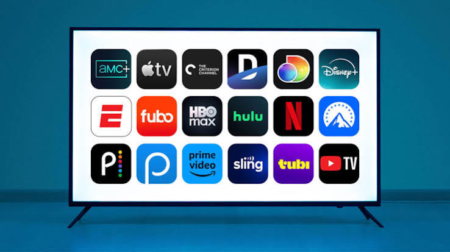
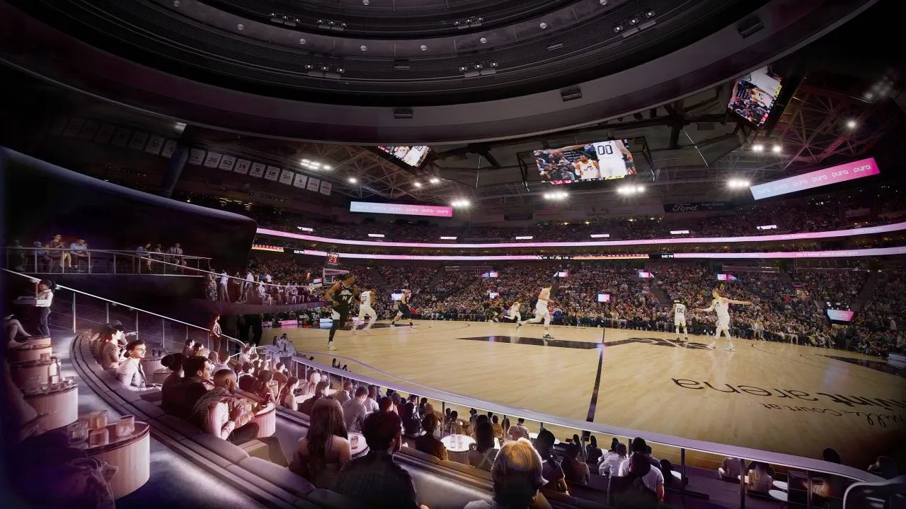
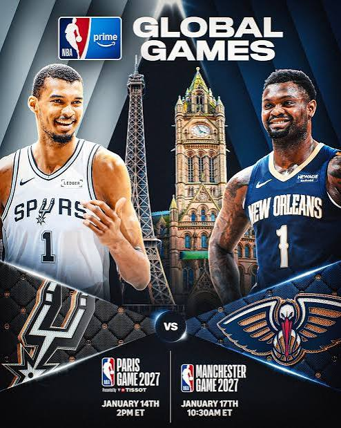

Part 1: Current Challenges
- Media Fragmentation Across Platforms: Audiences are split across linear TV, streaming apps, social media, and podcasts, making unified reach difficult.
- Over-Commercialization and Fan Fatigue: Heavy sponsorship saturation, jersey patches, and constant ads all-around risk alienating core supporters.
- Athlete Activism and Political Expression: Navigating the tension between supporting athletes' social justice voices and managing sponsor or fan backlash.
- Crisis Communication in a 24/7 News Cycle: Incidents go viral in seconds, requiring immediate, transparent, and carefully vetted responses.

▸ Real-World Issue: Over-Commercialization & Fatigue
Visual saturation in athletic arenas showcases the intense commercialization of modern sport spaces—often leading to fan fatigue and a disorganized media experience.
Visual saturation in athletic arenas showcases the intense commercialization of modern sport spaces—often leading to fan fatigue and a disorganized media experience.
- College athletes monetizing name, image, likeness: Student-athletes now operate as independent entrepreneurs securing brand deals and endorsements.
- Unequal access: Student visa restrictions often prevent international athletes from profiting off NIL deals on U.S. soil.
- Managing reputational risks for young athletes: Missteps on social media can instantly jeopardize lucrative collegiate brand partnerships.
- Opportunities for athlete-driven media brands: Athletes build equity through personal podcasts, apparel lines, and content studios while still in school.

▸ Real-World Example: NIL & Athlete Branding
The launch of collegiate NIL stores (such as St. John’s NIL Store shown above) illustrates how college athletes now directly monetize their name, image, and likeness, though this raises new questions about managing reputational risks and ensuring equitable access.
The launch of collegiate NIL stores (such as St. John’s NIL Store shown above) illustrates how college athletes now directly monetize their name, image, and likeness, though this raises new questions about managing reputational risks and ensuring equitable access.
- Online abuse targeting athletes: Direct access via comments and DMs exposes players to constant unfiltered toxicity and threats.
- Sport betting and harassment linked to performance: Angry bettors frequently target athletes after missed shots, injuries, or blown spreads.
- Gender disparities in online abuse: Female athletes disproportionately face body-shaming, sexualized harassment, and identity-based attacks.
- Pressure on organizations to respond: Teams and leagues face growing scrutiny to implement comment filters, mental health support, and legal protections.

▸ Real-World Issue: Sports Betting & Performance Harassment
The rise of mobile player-prop betting—where a single missed stat line (such as Luka Dončić finishing with 0 double-doubles on a $50 parlay) costs fans money—fuels direct, real-time online abuse against athletes and increases pressure on leagues and platforms to intervene.
The rise of mobile player-prop betting—where a single missed stat line (such as Luka Dončić finishing with 0 double-doubles on a $50 parlay) costs fans money—fuels direct, real-time online abuse against athletes and increases pressure on leagues and platforms to intervene.
- Spread of fake news and rumors: Unverified trade rumors, fake injury reports, and AI deepfakes spread rapidly before official corrections.
- Declining trust in media institutions: Skepticism toward traditional sports journalism pushes fans toward independent creators and fan channels.
- Athletes as direct communicators: Players bypass beat reporters by breaking their own news via personal social channels and podcasts.
- Risk of conflicting narratives: Discrepancies between team PR statements and an athlete’s personal posts can spark public confusion.

▸ Real-World Issue: Viral Trade Rumors & Fake Graphics
Polished, aggregator-style trade edits (such as a mock graphic depicting Giannis Antetokounmpo traded to the Golden State Warriors alongside Stephen Curry) spread rapidly on social media as fake news, eroding trust in sports reporting and forcing athletes or teams to counter conflicting narratives.
Polished, aggregator-style trade edits (such as a mock graphic depicting Giannis Antetokounmpo traded to the Golden State Warriors alongside Stephen Curry) spread rapidly on social media as fake news, eroding trust in sports reporting and forcing athletes or teams to counter conflicting narratives.
Part 2: Industry Forecast
- Growth of streaming platforms (ESPN+, Amazon, Apple, Peacock): Tech giants and digital platforms are aggressively acquiring live sports broadcast rights.
- Fragmented audience, rising costs for fans: Following a single team across a season often requires juggling multiple paid subscriptions.
- Leagues experimenting with subscriptions and bundles: Leagues are launching proprietary D2C apps (like NBA League Pass) and cross-platform bundles to retain viewers.
- Greater global reach but more competition: Digital distribution unlocks worldwide viewership while forcing sports to compete with gaming and on-demand entertainment.

▸ Industry Trend: Platform Fragmentation & Subscription Fatigue
As live sports rights split across standalone apps (such as ESPN+, Apple TV, Peacock, Prime Video, and Netflix), fans must navigate multiple subscriptions and rising costs to follow a single league or team.
As live sports rights split across standalone apps (such as ESPN+, Apple TV, Peacock, Prime Video, and Netflix), fans must navigate multiple subscriptions and rising costs to follow a single league or team.
- AI personalization of fan experiences: Algorithms tailor highlight reels, real-time stats, and ticket offers to individual fan habits.
- AR/VR immersive sport experiences: Spatial computing and virtual reality offer courtside views, interactive overlays, and virtual watch parties.
- Data-driven sponsorship and marketing: Brands rely on granular fan engagement metrics rather than broad impressions to measure ROI.
- Athlete-created media companies: Stars launch major production houses (e.g., Uninterrupted, Religion of Sports) to own their storytelling IP.

▸ Industry Trend: AR/VR Immersive Sport Experiences
Virtual reality and spatial computing environments (such as virtual courtside suites with live multi-angle feeds and interactive arena views) transform remote viewing into personalized, stadium-like experiences.
Virtual reality and spatial computing environments (such as virtual courtside suites with live multi-angle feeds and interactive arena views) transform remote viewing into personalized, stadium-like experiences.
- International fan bases growing: Leagues leverage global stars and international regular-season games to build overseas followings.
- Cross-cultural marketing challenges: Campaigns must be localized for language, cultural norms, and regional time zones rather than simply translated.
- Expansion into emerging markets: Heavy investment in growing sports fandom across regions like India, Africa, Latin America, and the Middle East.
- Increased competition for attention: Domestic leagues must vie for screen time against premier international properties like the Premier League and Formula 1.

▸ Industry Trend: International Showcase Games & Global Distribution
Events like the NBA Global Games in Paris and Manchester (featuring international stars like Victor Wembanyama and global streaming partners like Prime Video) illustrate how leagues grow overseas fan bases while navigating cross-cultural marketing and competing for international attention.
Events like the NBA Global Games in Paris and Manchester (featuring international stars like Victor Wembanyama and global streaming partners like Prime Video) illustrate how leagues grow overseas fan bases while navigating cross-cultural marketing and competing for international attention.